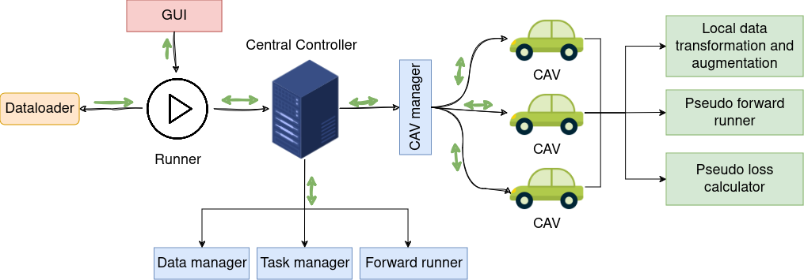
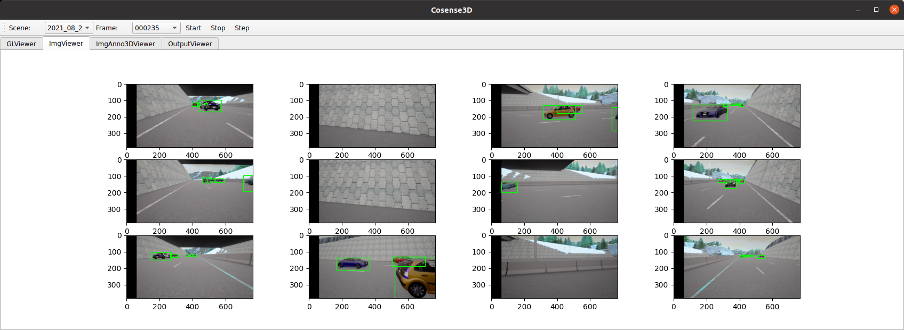
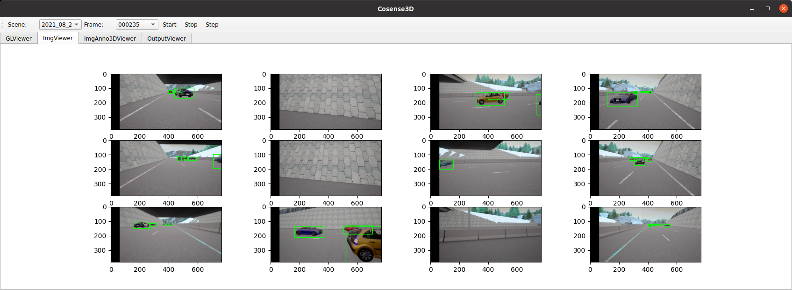
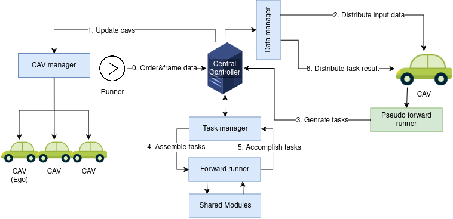

The Structure of the framework

The overall framework contains four main modules, namely Dataloader, Graphical user interface (GUI), Runner and Central Controller. The Central Controller is the core module of the framework which contains four sub-modules: CAV manager, Data manager, Task manager and Forward runner. Black arrows indicate the instruction flow, green arrows show the data flow. The framework can run either with or without visualization in the GUI.
Dataloader
The framework standardizes the data loading API for collective perception with a predefined dictionary format to store the meta information in JSON files. With this API, a new dataset can be easily converted to the a standardized format without rewriting the PyTorch Dataloader and coping the large media files, such as point clouds and images, to a new data structure. Only the meta information such as scenarios, frames, timestamps, parameters of sensors and the annotations are parsed and saved to CoSense3D format in JSON files. This standardized Dataloader is able to load images, point cloud data, 2D annotations for images, 3D local annotations for perception without CAV cooperation and 3D global annotations for collective perception.
GUI
The graphical user interface can visualize the training and test data and check the training and test outcomes by one click. This is helpful for loading new datasets and developing new models. Before training on a new dataset, it is necessary to check if the data is converted and loaded correctly. During and after training, visualizing the model output is also helpful to identify the drawbacks and problems of the model and then refine or modify the model accordingly.
The GUI can send commands to the runner to start, stop or step the runner process. After each runner step,
it updates the visualization modules, 3D GLViewer, ImgViewer, ImgAnno3DViewer and OutputViewer.
GLViewer is a OpenGL-based visualizer for 3D data, annotations (green boxes) and predictions (red boxes).
ImgViewer shows image data and the corresponding 2D bounding boxes. ImgAnno3DViewer is used to visualize
if the transformations and augmentations of images and 3D annotations are correctly loaded and processed.
Each row in ImgViewer and ImgAnno3Dviewer shows the images of a single CAV. After training the model,
the OutputViewer can be used to visualize the test result. The OutputViewer can contain multiple canvases
which can be customized by the user.
An example that shows the BEV segmentation (top) and object detection (bottom) result.
 



Runner
In this framework, three types of Runners are available, namely, TrainRunner, TestRunner and VisRunner. The user can launch these runners with or without GUI. They are used for training, testing and input data visualization, respectively. Runners manage the frame-wise data and orders dispatching to Central Controller, which then process the orders with the provided frame data accordingly.
Central Controller
 Central Controller is the core module of this framework, it communicates with the order-dispatcher (Runner) and the CAVs through its CAV manager. The Data manager is responsible for data gathering and scattering between the central controller and the CAVs. Similarly, the Task manager gathers pseudo tasks generated by CAVs, batches these tasks and dispatches them to the forward runner, which contains all shared deep learning modules, for implementation. In this framework, a standardized CAV prototyping API is provided to allow the user to define the customized workflow for collective perception, including the data augmentations, CAV coordinate transformations, CPM sharing strategies, the forwarding order of the shared neuron network modules and gradient computation strategies of these modules.
Based on the CAV prototype, the central controller will then implement a standardized pipeline based on the tasks generated by the CAV prototypes. Once the Central Controller receives the order and frame data from the Runner (step 0), the CAV manager will update the CAVs according to the meta information in the frame data and the provided prototype of CAV (step 1). Then the Data manager distributes the input frame data to the updated CAVs (step2). Upon receiving the input data, the CAVs then pre-process the input data and generate tasks and send them back to the Central Controller for processing (step3). To increase the efficiency of the forward process, the Task manager will first summarize the tasks from all CAVs and batch them in two forward steps, one requires gradients, and one without gradient computation, for parallel processing in the Forward Runner (step 4 and 5). After finishing these tasks, the generated results are then distributed back to individual CAVs.